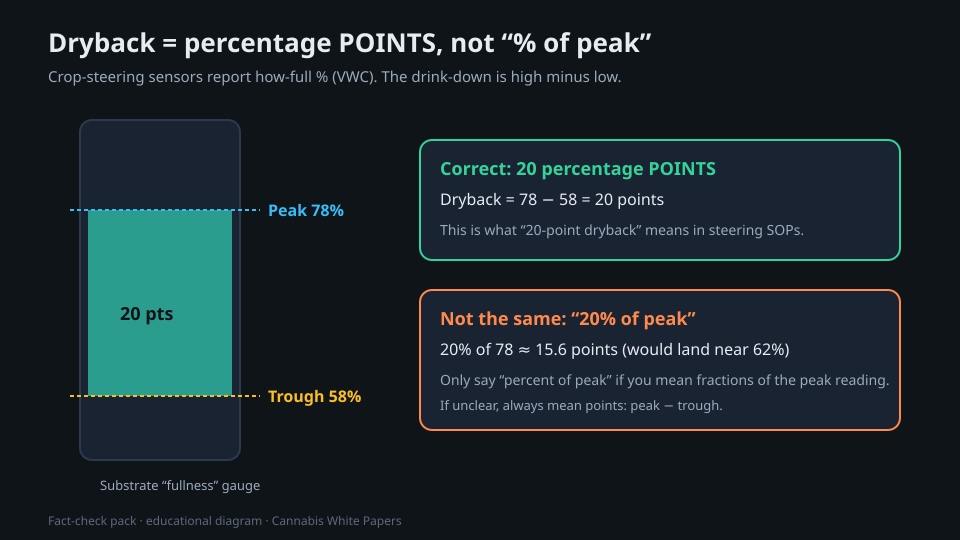

Precision coco cultivation: crop steering in coir
Coco coir is the easiest substrate for crop steering, because the wet and dry cycles give the same result each time. This paper gives information about the numbers that a root-zone sensor shows. It shows how the wet and dry cycle of one day operates. It also shows how to use dryback to cause more leaf growth or more flower growth. It is not necessary to know about the root zone before you read this paper.
Purpose and scope
‘Crop steering’ is an easy method. When you control when and how much water you apply, you can cause the plant to become larger with more leaves. Or you can cause the plant to make flowers with a high density and more resin. Coco coir is the easiest substrate for crop steering, because it becomes wet and dry quickly and the result is the same each time.
You can use this paper if you did not measure a root zone before. Each term has a definition. At the end, you will know how to read the numbers of a root-zone sensor. You will also know how to use the wet and dry rhythm of each day to control the plant.
This paper is for each grower who uses coco or thinks about coco. These growers want results that they can get again. They do not want to apply water ‘when it feels dry.’ Use this paper with the root-zone sensor paper and the grow room systems paper.
Definitions
It is not necessary to know all of these terms at this time. It is sufficient to know the basic information of each term. Each term occurs again in this paper, with more information.

Evidence and limitations
We want each paper to be correct. Thus we examine each paper for information that is not solid. This information comes from the view of one grower, from a small number of sources, or from grower methods that have no controlled test. We identify this information, and we do not show it as solid.
Frequently there is no paper for the decision that you must make. Then we use the reports of other growers and the methods that work in the rooms that we know. This information can help you, but it is not the result of a laboratory test. Use the methods that work for your plants, for your room and for your meters. If a table does not agree with your crop, use the data from your crop and record the difference.
- Coco is almost inert. The operator can control most of the EC and the water content of the root zone.
- A small water deficit can change the secondary metabolism of the plant. A large drought causes stress in plants.
- The dryback of each day and the runoff EC, as the levers for steering in commercial rooms.
- Targets for field capacity and for the dryback point, after you calibrate the sensor for each medium.
- One drought in the last stage of the crop (the test of Caplan) directly as a procedure of dryback each day for many weeks.
- One range of EC for generative growth that ignores the cultivar and the light intensity.
If you find an error, make a report. We will correct it. Make the report on GitHub, with the name of the paper and the information that is incorrect. If you have a source, include it: Make a report of an accuracy problem. The regulations, labels and licenses of your area always override each procedure in these papers. The label weak in a paper shows the points where the risk of an error is highest.
Coco substrate properties
Coco contains a large quantity of water and a large quantity of air at the same time. At field capacity, approximately a fifth to a third of the volume of the coco is pore space that contains air[1]. This air supplies oxygen to the roots. As a result, the roots stay in good condition, and you can apply water frequently. The roots continue to get oxygen.
The fibers of coco have a small electrical charge. The charge holds nutrients and releases them. This property is the cation exchange capacity[2]. As a result, the nutrients in the root zone change less when the feed changes.
But new coco holds some of the calcium and magnesium of the feed. Thus the plant cannot use this calcium and magnesium. This continues until you soak the coco in a solution of calcium and magnesium.
New coco can hold calcium and magnesium in the first one or two weeks, and the plant cannot use them. Before you put the plants in the coco, soak the coco in a solution of calcium and magnesium. If you do not, deficiency marks can occur on the leaves at the start of the crop, until the coco is stable.

Reading the root zone: VWC and EC
A root-zone sensor gives two numbers that change with time: VWC (the quantity of water) and EC (the quantity of salt). Together they show the condition of the plant and the next step for you.
New growers frequently do not know this fact. When the substrate dries, the concentration of salt in it increases and, as a result, the EC increases. The quantity of water decreases, but the quantity of fertilizer does not decrease.
The sensor uses the bulk EC reading, the moisture and the temperature to calculate an estimate of the ‘pore-water EC’[4]. The pore-water EC is the EC of the water that touches the roots. Thus the EC readings are not accurate when the VWC is less than 10%.
- When the VWC falls, the plant uses water. This effect is good until the VWC falls too far. Then the growth of the plant stops.
- It is usual when the EC increases slowly as the VWC falls. If the EC increases by a large quantity in a short time, the root zone has too much salt. Thus apply water.
- When the EC decreases slowly during some days, the plant uses the salt faster than the feed supplies it. Thus increase the EC of the feed.
Dryback: your primary control for crop steering
Limit of the data: One drought in the last stage of the crop, as in the test of Caplan, is related to generative drybacks. But it is not the same test as dryback cycles each day for many weeks. Use dryback to cause a small change in the plant. Do not let wilt occur. The percentage values of your probe are not the same for all substrates.
A dryback is the quantity by which the root zone dries before you apply water again. You select this quantity. The effect on the plant is different for a small dryback and for a large dryback. A small, controlled water deficit changes the growth of the plant.
When the root zone dries by a small quantity, the plant makes a stress hormone. The name of this hormone is abscisic acid (ABA). ABA decreases vegetative growth and increases the production of flowers and resin[7]. The data show that a controlled water deficit at the correct time increases the cannabinoid content, and the yield does not decrease[5].
The difference is the dose and the time. Moderate drybacks keep the yield when you measure them and stop them at the correct time. A large drought that continues for too long decreases the yield and the cannabinoids by a large quantity[6]. Make small, careful changes. Always apply water before the plant shows wilt.
Larger drybacks give more generative growth (flowers). Smaller drybacks, which keep the substrate wetter, give more vegetative growth (leaves and size). This one control is most of crop steering: the quantity by which you let the root zone dry.
Irrigation cycle of one day: P0–P3
Growers divide the lights-on day into four phases. You can use this method without special equipment. The rhythm of the phases is: dry, fill again, keep full, and dry.
| Phase | Definition | Effect |
|---|---|---|
| P0 | The time after lights-on and before the first shot. You do not apply water. | A short dryback. It makes the plant start to use water before the first feed. |
| P1 | A number of small shots after lights-on | Fills the root zone again to field capacity, carefully |
| P2 | Maintenance shots | Keeps the VWC near full and flushes the salt that collects (EC control) |
| P3 | The last shot, then the night | The large dryback during the night. It sets the type of steering for the day: generative or vegetative. |
Vegetative and generative steering
‘Generative’ growth is the growth of flowers, density and resin. ‘Vegetative’ growth is the growth of leaves, stems and size. You change the growth of the plant with a small number of controls. All of these controls change how easily the plant gets water.
| Control | For GENERATIVE growth (flower) | For VEGETATIVE growth (leaves and size) |
|---|---|---|
| Dryback | Drybacks that are larger and longer | Smaller drybacks. The substrate stays wetter. |
| Feed EC | Higher EC (more osmotic stress) | Lower EC |
| Shots | A smaller number of shots, smaller shots, and a longer time before the first shot | More frequent shots, larger shots, and a shorter time before the first shot |
| Day and night temperature | A lower night temperature and a larger difference between day and night | Higher temperatures and a smaller difference between day and night |
| VPD and humidity | Drier air (higher VPD) | Air with more humidity (lower VPD) |
When you increase the EC of the feed, the solution in the root zone has a higher concentration than the water in the plant. The plant must pull harder to get water because of the difference in concentration. This effect is osmotic stress. If you increase the EC by a moderate quantity, the generative growth becomes stronger. If you increase the EC too much, the growth stops.
Temperature is in the table above because the difference between day temperature and night temperature controls stretch. A warm day and a cool night give less stretch. A warm night gives more stretch[9].
The air around the leaves controls the rate of transpiration. When the air is drier, the plant transpires faster. Vapor pressure deficit (VPD) is the measurement of how dry the air is. You measure VPD in kPa. VPD is the difference between the quantity of water vapor that the air can hold at that temperature and the quantity that it holds. When the VPD is higher, the air removes more water from the plant.
When the VPD is more than some value, the pores of the leaf close to keep the water in the leaf. Then the transpiration decreases, but the air continues to be dry[8].
All controls have an effect on each other. Do not make large changes to the dryback, the EC, the humidity and the night temperature at the same time. Then you cannot know which change was good or bad, and the plant can get too much stress.
Change one control. Monitor the plant for some days. Then adjust the controls.
Flowering steering by week
The flowering stage in a grow room usually continues for approximately 8 to 10 weeks after you change the light cycle to a 12-hour night[10]. The steering changes during these weeks:
- 1End of the vegetative stageUse vegetative steering: keep the VWC high, keep the drybacks small, and keep the EC moderate. Make the plant and the root system large and in good condition.
- 2Weeks 1 to 2 of flowering (stretch)The plants become almost two times as high. To decrease stretch, keep the night temperature lower and the difference between day and night temperature moderate. In this stage, start to use small generative drybacks.
- 3Weeks 3 to 6 of flowering (flowers become larger)Use the maximum generative steering. Use strong drybacks and a higher EC. In P2, keep the root zone full to supply feed to the flowers while they become larger.
- 4From week 7 of flowering (ripening)Use less steering. A controlled water deficit in this stage can increase the potency. But stop the deficit before the plant shows stress.
- 5Finish (decrease the EC. The data that show better quality from a long flush with only water are weak)In the last part of the crop, apply feed with a lower EC. Let the plant complete its growth slowly and without problems.
Troubleshooting
| Symptom | Possible cause | Correction |
|---|---|---|
| The EC increases each day, and the plant is not in good condition | Salt collects. The drybacks are too large, or the flush is not sufficient. | Use larger shots in P2 to flush the salt. Decrease the EC of the feed by a small quantity. |
| The VWC falls by only a small quantity during the day | Too much irrigation, or the plant does not use water because of disease, low light, or a low temperature | Use a smaller number of shots, or smaller shots. Do a check of the condition of the roots, the temperature and the light. |
| Damaged leaf tips and leaves that bend down | The EC of the feed is too high for the conditions | Decrease the EC. Make sure that each shot has a sufficient volume of water. |
| The plants are high, with too much stretch and weak stems | The plants are too vegetative because the nights are warm and the drybacks are small | Decrease the night temperature. Increase the difference between day and night temperature. Use larger drybacks. |
| Calcium and magnesium deficiency in the first weeks | New coco that you did not soak in calcium and magnesium | Before you use the coco, soak it in a solution of calcium and magnesium. Add calcium and magnesium to the first feeds. |
| The plant shows wilt between shots | The dryback is too large. It is a drought and not crop steering. | Apply water after a smaller dryback. Make P0 and P3 shorter. Do not let the plant show wilt. |
Expected results and limitations
- There is no one set of numbers that is correct for all rooms. The correct numbers for VWC, EC and dryback are different if the cultivar, the pot size, the climate or the light is different. Start with the ranges in this paper and adjust them for your plants.
- Steering makes a result more possible, but it does not give a fast change. The effect occurs during some days. You do not change a plant in one night.
- The root zone is only one control. Light, temperature, humidity and airflow all have an effect on the same plant. After this paper, read the grow room systems paper.
Put a sensor in the root zone. Find the baseline, which is the values of one usual day in your system. Then change one control at a time. This method has three steps: a sensor first, a baseline second, and one change at a time. The method makes coco give the same results in each crop.
References
- Abad M, Noguera P, Puchades R, Maquieira A, Noguera V (2005). Physical properties of various coconut coir dusts compared to peat. HortScience 40(7):2138-2144. https://doi.org/10.21273/HORTSCI.40.7.2138
- Noguera P, Abad M, Puchades R, Maquieira A, Noguera V (2003). Influence of particle size on physical and chemical properties of coconut coir dust as container medium. Commun. Soil Sci. Plant Anal. 34(3-4):593-605. https://doi.org/10.1081/CSS-120017842
- Malik M, Tlustoš P (2025). Soilless growing media for cannabis cultivation. Agriculture 15(18):1955. https://www.mdpi.com/2077-0472/15/18/1955
- Hilhorst MA (2000). A pore water conductivity sensor. Soil Sci. Soc. Am. J. 64(6):1922-1925. https://doi.org/10.2136/sssaj2000.6461922x
- Caplan D, Dixon M, Zheng Y (2019). Increasing inflorescence dry weight and cannabinoid content in medical cannabis using controlled drought stress. HortScience 54(5):964-969. https://doi.org/10.21273/HORTSCI13510-18
- Stack GM, Cala AR, Quade MA, et al. (2024). Severe drought significantly reduces floral hemp (Cannabis sativa L.) yield and cannabinoid content but moderate drought does not. Ind. Crops Prod. 209:117974. https://doi.org/10.1016/j.indcrop.2024.117974
- Welling MT, et al. (2025). Regulation of secondary metabolism in Cannabis sativa L. by abscisic acid and water deficit during early flower development. Plant Stress 17:100968. https://doi.org/10.1016/j.stress.2025.100968
- Grossiord C, Buckley TN, Cernusak LA, et al. (2020). Plant responses to rising vapor pressure deficit. New Phytologist 226(6):1550-1566. https://doi.org/10.1111/nph.16485
- Myster J, Moe R (1995). Effect of diurnal temperature alternations on plant morphology in some greenhouse crops, a mini review. Scientia Horticulturae 62(4):205-215. https://doi.org/10.1016/0304-4238(95)00783-P
- Moher M, Llewellyn D, Jones M, Zheng Y (2023). Is twelve hours really the optimum photoperiod for promoting flowering in indoor-grown cultivars of Cannabis sativa? Plants 12(14):2605. https://doi.org/10.3390/plants12142605
Each citation in the paper, for example [1], refers to an item in this list. Each item is a primary source or an instruction from an authority, unless the item shows a different type. The results of cannabis tissue culture change much with the genotype. Before you use the dilutions, hormone doses and local regulations, make sure that they agree with the primary sources.